前言
为了表示第一次对审计的尊重，前前后后尝试了许多环境才进行代码审计，deepin,docker…..都没有如愿。折腾了两天只能选择windows10下phpstudy来构造审计环境。
环境
windows10专业版
php 5.6.27
mysql,apache
getshell演示
构造
1.jpg.php－>压缩为1.jpg.zip内容为<?php phpinfo(); ?>
将压缩文件1.jpg.zip上传到soft目录下
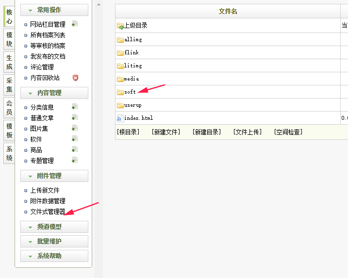
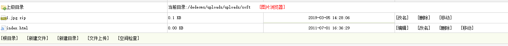
访问dede/album_add.php
选中从zip压缩包中解压图片，浏览1.jpg.zip
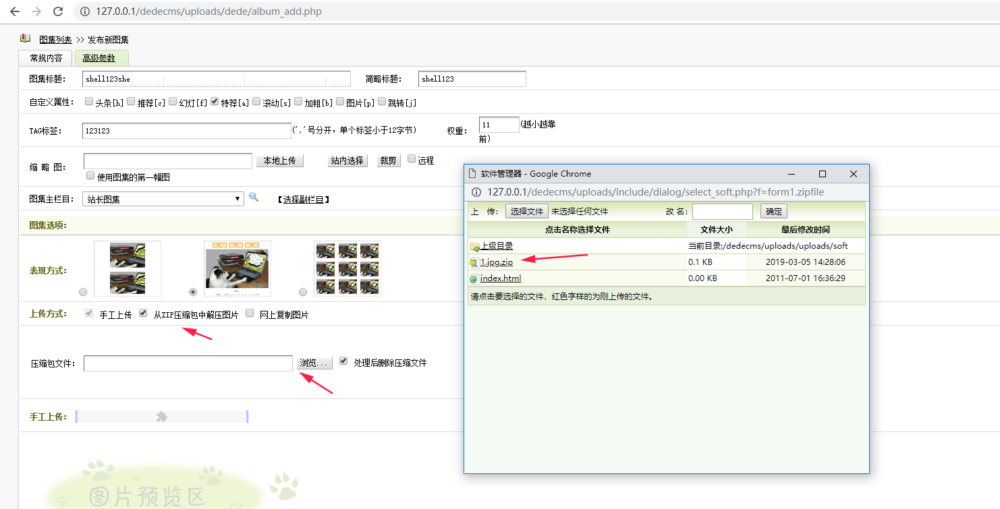
发布图片，点击预览
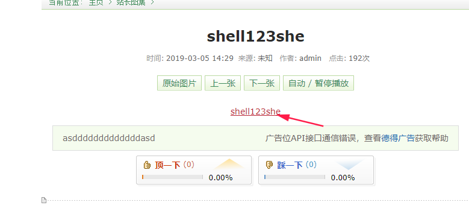
点击shell123she，进入phpinfo,getshell成功
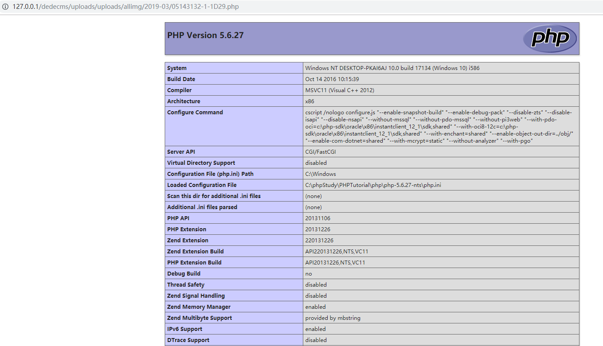
代码审计
$dopost=save 执行else if语句
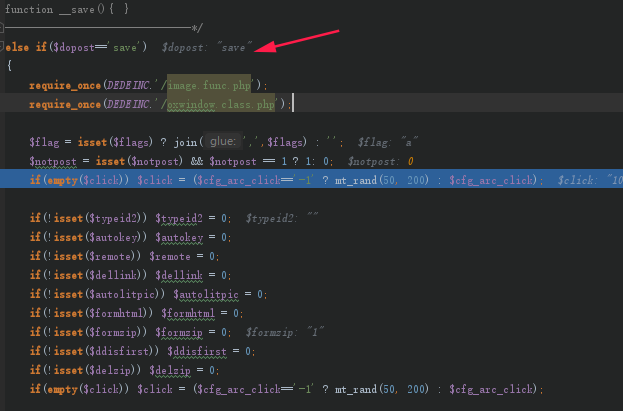
进入if($formzip==1)执行压缩包解压，在GetMtchFIles设下断点，查看文件名bypass过程
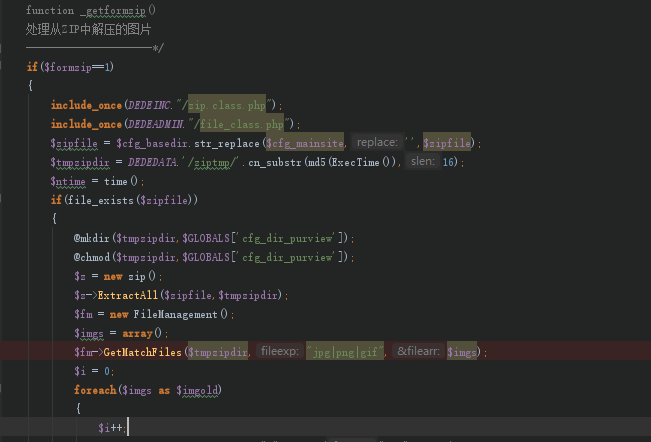
跟进GetMatchFIles方法，简要分析
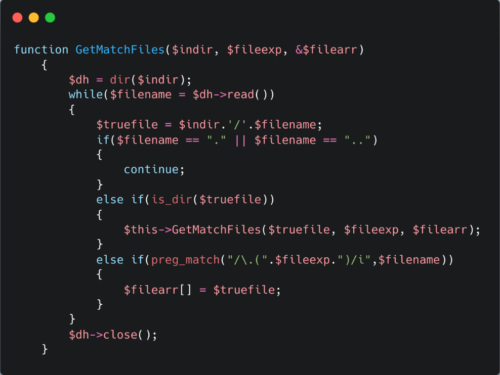
if($filename == "." || $filename == "..")跳过对两个隐藏文件 '.' '..'的读取.
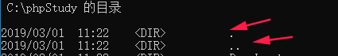
else if(is_dir($truefile)) 对文本路径在做判断
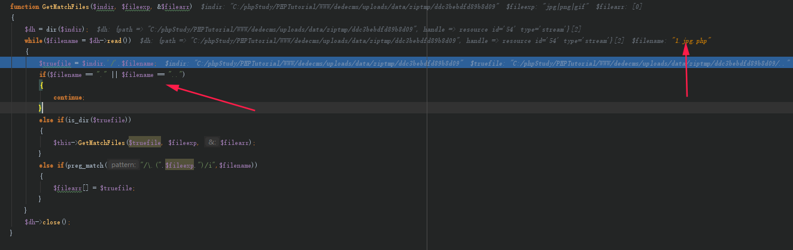
满足正确的文件路径,程序进入 else if(preg_match("/\.(".$fileexp.")/i",$filename))
执行reg_match,成功绕过白名单，文件被赋值为绝对路径，跳出方法，开始进行保存操作。
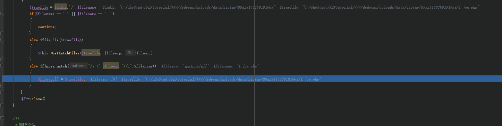
从下图可以看出1.jpg.php成功绕过正则表达式,但是.php并未做处理
代码修复
１． 将白名单之外的 .后缀名 进行消毒处理
２． 提取文件合法后缀名进行文件重写。
（个人理解，实操的话……）
打uploads靶场对文件上传的理解uploads_labs
总结
- xdebug使用不熟练，总是需要多次重复getshell,debug操作还需要更深入的了解。
- 对关键方法需要设置断点，并跟进进行详读和分析。
- 白名单拥有比黑名单更好的防御机制，但是需要更好的完善消毒代码